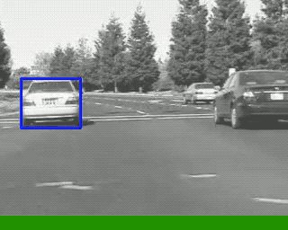
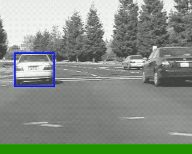
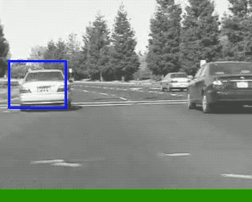
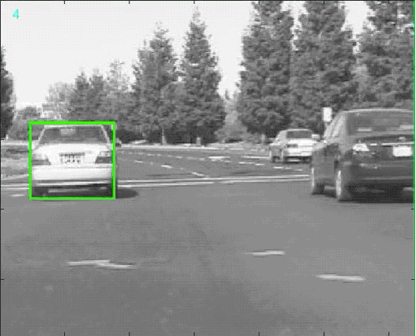

Obstacle Dynamics Prediction
Liexiao Ding, Ziyi Wang, Zhanzhan ZhaoFall 2018 CS 4803 / 7643 Deep Learning: Class Project
Georgia Tech
This webpage template is based on a similar template from Dr. Devi Parikh's Intro to Computer Vision course.
Abstract
The problem we try to tackle in this project is obstacle movement prediction, which is essential to research on autonomous driving with only visual information. We split the problem into two parts: first identify the obstacle by drawing a bounding box around it, then predict its movements by focusing on the bounding box dynamics instead of the whole image. One or two sentences on the main result you obtained.Teaser figure
A flowchart like figure showing how we take an input image, draws a bounding box and predicts its movements. (This one is from AlexNet.)
Introduction / Background / Motivation
What did you try to do? What problem did you try to solve? Articulate your objectives using absolutely no jargon.
In this project, we work on predicting the movments of one or more obstacles captured in a video. We try to do so by first applying an object detector/tracker which draws bounding boxes around obstacles of interest. We then predict the movements and shrinking/expanding of the bounding boxes, which reflect the dynamics of the obstacles. In the proeject we tackle this problem in the context of autonomous driving, where we use videos taken by a car-mounted camera and try to predict movements of other cars in the video.How is it done today, and what are the limits of current practice?
Most of the applications in obstacle detection/avoidance for autonomous driving rely on various sensors like LIDAR, sereo cameras, GPS, etc. (reference), which are very expensive and require an algorithm to make sense of and fuse all the sensor information. In certain applications, such as driving off road, it might be infeasible to access many sensors. In the field of video prediction research, there are many efforts on predicting entire images. However, predicting videos far into the future in real time has not been very successful, even with advanced network architecture and training scheme ([1], [2], [3], [4]). Another approach to video prediction leverages attention where only certain areas in an image are predicted while the rest remains still. The limit of this this approach is the assumption of a still background which does not hold in the autonomous driving setting.For this project, we considered pros and cons of both approaches in current video prediction research. Our approach takes advantage of masking/attention by using an object detector to create the mask, and avoids the background problem by predicting the movement of the mask only.
Who cares? If you are successful, what difference will it make?
The success of this project is important for future research on obstacle avoidance in autonomous driving with only visual information. The output of the pipeline resulted from this project can be postprocessed by another module to estimate the obstacle location and size, which can then be used by a path planner. This would allow for an autonomous driving framework requiring only visual information from a single camera.Approach
We broke the problem into two parts: obstacle detection/tracking and obstacle dynamics prediction. The tracking part takes in an input image stream and outputs the bounding box information on one or more objects. For this part we turned to existing obstacle detection algorithms since it is a rather established field and there are many existing algorithms that achieve good performance on our objective. The bounding box information is used by the obstacle dynamics prediction part to create a mask, which is then fed into the network for prediction of future masks. For prediction we used a custom encoder-decoder LSTM network structure, while drawing inspirations from existing work on training.Tracking
What did you do exactly? How did you solve the problem? Why did you think it would be successful? Is anything new in your approach?
We first tried a set of state of the art object tracker based on AdaBoost, Multiple Instance Learning, Kernelized Correlation Filters, and GOTURN. These tracker performs quite decent when there is not much occlusion. However, if we encounter only slight occlusion, all of the abovementioned tracker failed. For obstacle dynamics prediction we usedWhat problems did you anticipate? What problems did you encounter? Did the very first thing you tried work?
We turn our focus to study more recent development of object tracking with deep learning techniques anticipating more statble object box tracking. We found ECO(Efficient Convolution Operators for Tracking) out ferformed all the trackers we had tried previously and satisfied our requirement for box tracking so that we can previde a stable tracker for our next steps of dynamics prediciton.Obstacle Dynamics Prediction
What did you do exactly? How did you solve the problem? Why did you think it would be successful? Is anything new in your approach?
For obstacle dynamics prediction, we first took the bounding box information in each image/frame and created a mask the same size of the image with zeros everywhere except for inside the bounding boxes, where the value is set to 1. The masks were first shrunken by factors of 2 until a dimension size becomes odd or below 32. All the masks were then used to build a dataset of sequences. The sequence length is a hyperparameter and also a performance indicator. Each mask was flattened before fed into the network.The network structure we used is a LSTM, since we are trying to predict the temporal evolution of the masks. The network takes in the flattened masks and outputs a mask of the same size at the next frame. The hyperparameters related to the network are hidden state dimensions, number of LSTM layers and dropout probability. For training, we used three different techniques. The first technique is Teacher Forcing, where we always use the true mask as the input to the network. The other two approaches we took utilize an encoder-decoder framework, where we provide the network with true masks for a certain number of frames and then use the last hidden state which contains the encoded information to predict another number of frames. For prediction, we tried using both the predicted mask as input to the next step and using only a dummy input of zeros, in which case only the hidden state information is used for prediction. In this case we introduced one more hyperparameter in the fraction of the sequence used for prediction.
What problems did you anticipate? What problems did you encounter? Did the very first thing you tried work?
Exploding gradientECO: Efficient Convolution Operators for Tracking
- Factorized Convolution Operator
- Generative Sample Space Model
- Model Update Strategy
Experiments and Results
How did you measure success? What experiments were used? What were the results, both quantitative and qualitative? Did you succeed? Did you fail? Why?
Tracking
The following are the visualization of tracker BOOSTING, MIL and TLD.  
We trained an ECO tracker and it's the only tracker tested that correctly tracked our target object.
